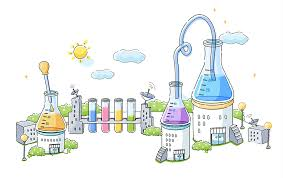
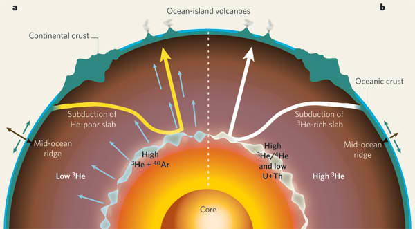
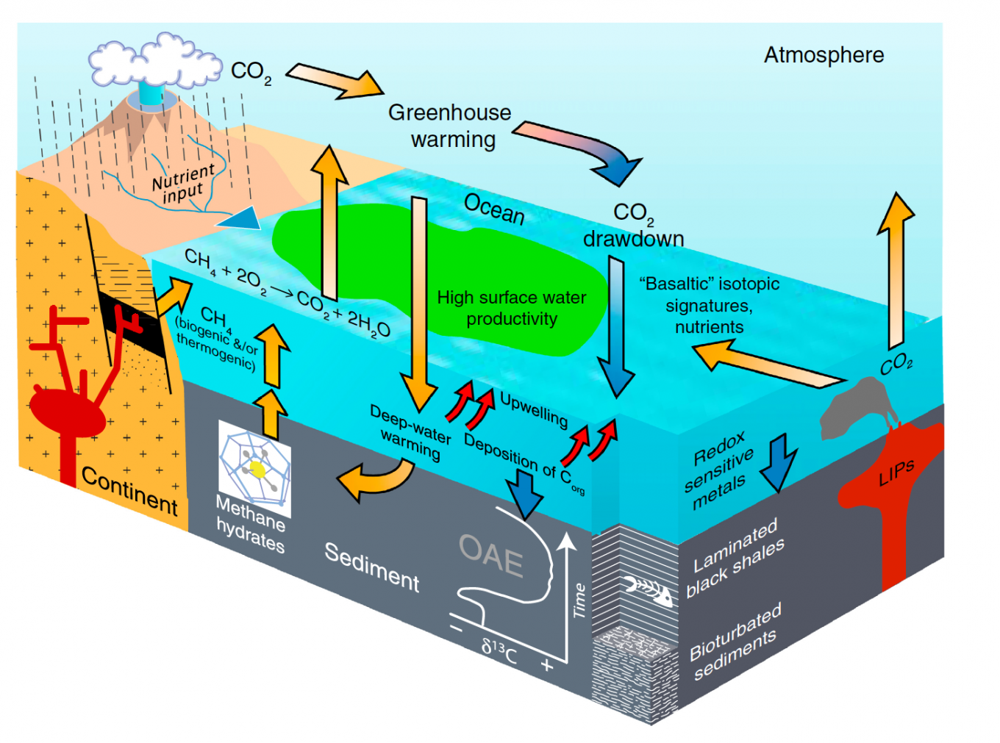
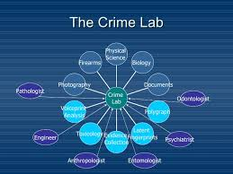

Fields of Study
Within these broad categories are countless fields of study, many of which have important effects on our daily life.
Chemists improve many products, from the food we eat and the clothing we wear to the materials with which we build our homes. Chemistry
helps to protect our environment and searches for new sources of energy.
Chemical Engineering

Chemical engineers research and develop new materials or processes that involve chemical reactions. Chemical engineering combines a background
in chemistry with engineering and economics concepts to solve technological problems. Chemical engineering jobs fall into two main groups:
industrial applications and development of new products.
Industries require chemical engineers to devise new ways to make the manufacturing of their products easier and more cost effective. Chemical
engineers are involved in designing and operating processing plants, develop safety procedures for handling dangerous materials, and supervise
the manufacture of nearly every product we use. Chemical engineers work to develop new products and processes in every field from pharmaceuticals
to fuels and computer components.
Geochemistry


Geochemists combine chemistry and geology to study the makeup and interaction between substances found in the Earth. Geochemists may spend
more time in field studies than other types of chemists. Many work for the U.S. Geological Survey or the Environmental Protection Agency in
determining how mining operations and waste can affect water quality and the environment. They may travel to remote abandoned mines to collect
samples and perform rough field evaluations, and then follow a stream through its watershed to evaluate how contaminants are moving through the
system. Petroleum geochemists are employed by oil and gas companies to help find new energy reserves. They may also work on pipelines and oil rigs
to prevent chemical reactions that could cause explosions or spills.
Forensic Chemistry

Forensic chemists capture and analyze the physical evidence left behind at a crime scene to help determine the identities of the people involved as well
as to answer other vital questions regarding how and why the crime was carried out. Forensic chemists use a wide variety of analyzation methods, such as
chromatography, spectrometry and spectroscopy
Question!
What field of study on chemistry does making of slime belongs?